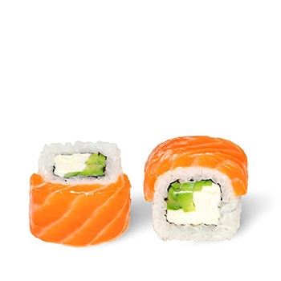

Роллы
1
afaf
1.Приготовить все ингредиенты (нарезать, отчистить от кожуры)
2.Обернуть циновку в пищевую плёнку
3.Расположить лист нори на циновке
4.На листок нори положить сначало рис, потом намацать сыр, авокадо и рыбу
5.С помощью циновки закрутить листок нори с его внутрястями и прижать
